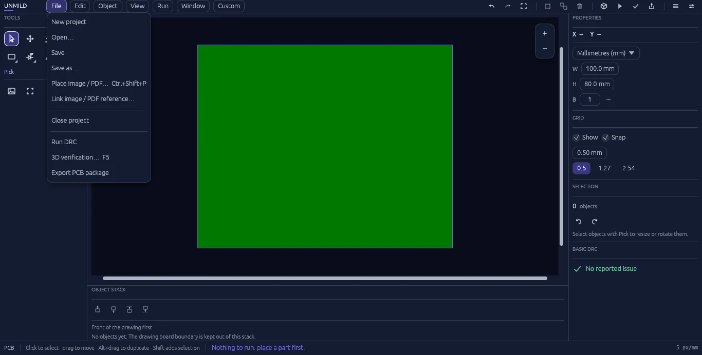
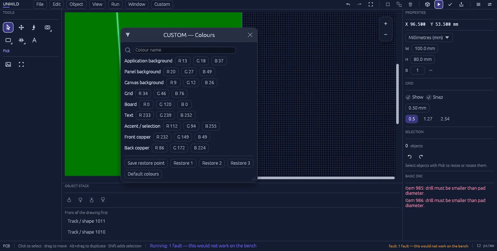
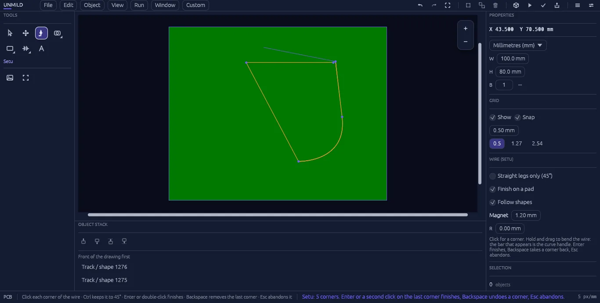
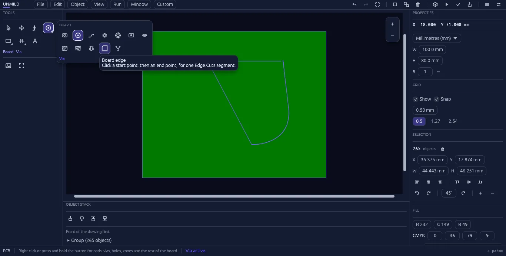
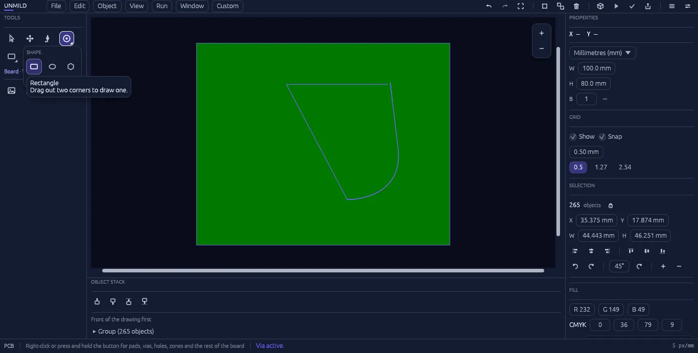

One professional platform for the board and the firmware.
Unmild Designer brings the complete electronics workflow together: PCB design, embedded C/C++, microcontroller programming, live behavior, 3D review, analysis, verification, and manufacturing release.
01 — welcome screen
Starting a board
Three ways in: start something new, reopen a project folder, or open a board file directly.
Welcome screenpresets · recent projects
Create a projectfolder · size · board count
New project walks through a parent folder, a project name, a board size in millimetres (with quick presets — Tiny signal, Eurocard, Wide panel, Card size, Pi HAT, Uno shield — or saved custom sizes), and how many boards to start with. Create project sets up a folder containing a single .tamas file — that file is the board. Exporting later adds a build folder alongside it with the fabrication output, so a project stays one folder that can be copied, zipped, or handed off whole.
Open project folder loads any project by pointing at its folder — even nested a level or two down. Open board file skips straight to a specific .tamas file. Saved presets and recent projects sit ready to reopen with one click.
02 — the workspace
The canvas & navigation
Menu bar and toolbox up top, properties on the right, the board itself in the middle — and navigation that stays under one hand.
Main workspaceX 121.000 Y 34.500 mm
Navigation is built for a mouse and can be made your own. Tune zoom animation, zoom sensitivity, horizontal and vertical pan sensitivity, hand-tool sensitivity, and whether zoom follows the pointer. Save navigation presets for different working styles. Grid visibility and snapping are controlled separately, while live coordinates keep every edit legible. Design checks remain visible in the properties panel so the PCB stays under control while it is being built.
03 — special features
Live 3D and Mool: firmware and physical hardware in the same workflow.
Two standout capabilities bring the electronics design to life: Live 3D makes the board visible as a physical system; Mool brings the code that controls it into the project.
LIVE 3D
See the physical system, not only the canvas.
Live 3D gives the board a working physical perspective. Inspect the PCB, components, outline, and the visible state of the design while the Run environment reports readings, pin activity, and issues. It turns a flat layout into a system you can review from the way it will exist in the real world.
Mool connects the code, target microcontroller, and PCB. Select the controller on the board, author firmware in the embedded editor, build the target image through the installed local toolchain, program it, and return directly to Live 3D and Run.
Mool: write the firmware. Program the microcontroller. Watch the hardware respond.
Mool closes the distance between the PCB and the code that gives it behavior.
Mool editorcode · target · behavior
Microcontroller in contextPCB · firmware · Run
01Choose the target
Place and select the microcontroller on the PCB. Mool works in the context of the selected hardware.
02Write C or C++
Author embedded firmware directly inside Unmild Designer, beside the board and its pins.
03Build the image
Mool invokes the compiler installed on your computer and prepares the binary format required by the target.
04Program & observe
Program the microcontroller, then use Run to see pin state, board behavior, readings, and issues in real time.
A complete embedded workflow, inside the electronics project
Mool gives the firmware a home where it belongs: in the same environment as the microcontroller, its pins, and the PCB around it. Write C/C++, build it with the toolchain already installed on your system, produce the board-ready binary image, and program the selected target without breaking concentration or switching products.
The result is a tighter engineering loop. The board defines the physical system; the firmware defines how the microcontroller drives it; Run makes the behavior visible. Whether you are bringing up a blinking LED, validating GPIO logic, or testing a controller-driven board, Mool keeps the code and the hardware in the same conversation.
What Mool needs: a supported microcontroller selected in the project and the matching compiler/toolchain installed on the Windows machine. Mool uses that local toolchain to compile C/C++ and generate the target’s required firmware binary format.
04 — connected workbenches
From design intent to release, in one desktop workspace
Unmild Designer separates the work so design, firmware, verification, analysis, and release each have a clear home.
DESIGN
PCB canvas
Place, select, move, duplicate, rotate, route, use layers, and build the board outline with direct manipulation and undo/redo.
SCHEMATIC
Design intent
Create session components and named nets, then run basic ERC for missing components, missing nets, and duplicate net names.
MOOL
Embedded firmware
Author C/C++, build with the local compiler, generate a target image, and program the selected microcontroller in context.
ANALYSIS
First-pass impedance
Estimate single-ended microstrip and edge-coupled differential impedance from editable stack-up assumptions.
VERIFY
Verification
Bring PCB checks, schematic checks, 3D review, Run behavior, and firmware-driven board observation into one engineering workflow.
RELEASE
Manufacturing release
Generate the complete manufacturing, documentation, review, and release package in one controlled export.
05 — menu bar
Menus, from File to Customize
Seven menus: File, Edit, Object, View, Run, Window, and Customize.

FileDRC · 3D verification · export
Object → Parts of boardeverything placed, at a glance
File
New project, Open, Save, and Save as cover the essentials. Place image / PDF (Ctrl+Shift+P) places a visual reference on the board; Link image / PDF reference attaches datasheets, drawings, logos, or mechanical reference material. The workflow continues through DRC, 3D verification, Mool firmware, Run, and manufacturing release.
Edit
Undo, redo, and delete, behaving the way any editor should.
Object
This is where Summon lives — the searchable parts picker (its own section below) — alongside parts of board, a running list of exactly what's already placed.
View
Make the canvas match your habits: tune zoom, horizontal and vertical pan, and hand-tool sensitivity; choose pointer-centered zoom; then save and restore navigation presets.
Mool & Run
Mool is the embedded C/C++ environment for compiling, generating target images, and programming a microcontroller in context. Run is the live behavior view for the board. See Special Features and Live 3D & Run.
Window
Show or hide any panel — tools, properties, object stack — to clear the canvas down to just the board.
Customize
Make the workspace yours: custom colors for the application, panel, canvas, grid, board, text, accent, and copper; searchable, remappable command keys; navigation sensitivity; and panel docking or floating windows.
Keyboard shortcutsfully remappable

Custom colorsa themeable workspace
06 — toolbox
The toolbox
Pick, Hand, Setu, Board, Shape, Saad, and Text — every tool sits one keypress from the canvas.
Pick selects and Hand pans. Everything else is where the board gets built:

Setu"bridge / connector"

BoardPAD · VIA · TRACE · more
Setu — the wire tool
Named after the Sanskrit word for a bridge or connector. Hold Ctrl for straight, linear legs; hold and drag to bend a curve, pen-tool style. Live options while drawing: straight legs only (45°), finish on a pad, follow shapes, and a magnet snap distance set in millimetres.
Board
Build with the essentials: pads, vias, traces, holes, mounting holes, mask openings, copper zones, board edges, and nets. The layer system covers copper, silkscreen, mask, paste, and profile artwork.
Shape
Rectangle, ellipse, and polygon. Hold Ctrl while drawing to constrain a shape to equal width and height.

Shapehold Ctrl for a perfect shape
Saad & Text
Saad — Sanskrit for "to call" or "to summon" — is the same parts picker as Object → Summon, kept one click away in the toolbox for placing resistors, LEDs, batteries, and the rest without leaving the canvas. The text tool adds labels and silkscreen notes directly on the board.
07 — verification
3D verification & Run
A visual board review and live behavior environment that keep feedback beside the layout and firmware.
Run · 3D viewmotor at 7,398 rpm
Run · Problemsnames the part, states the fix
3D verification (F5) gives the board a physical rendering that can be inspected from any angle. It is a useful review view for the current board geometry and supported component bodies.
Run turns the board into a live engineering view: component state, pin activity, readings, and issues stay visible in the context of the physical PCB. With Mool, the microcontroller firmware becomes part of that same loop—write the code, program the target, and see how the board responds. The Simulation and Analysis workbenches extend the workflow with DC, AC, transient RC, and impedance calculation.
08 — fabrication
Exporting for fabrication
File → Export PCB package turns the completed electronics design into a professional manufacturing and review package in one pass.
build/26 files, one export
Everything lands in the project's build folder:
Gerber artwork for copper, silkscreen, mask, paste, and profile layers
Drill and NC manufacturing data
Board review drawing and project review PDF
Release manifest and README
Bill of materials, pick-and-place, and stackup information
Fabrication information for a complete handoff
One export keeps the release package together: the manufacturing files, review material, documentation, and fabrication information leave the project as one organized deliverable.